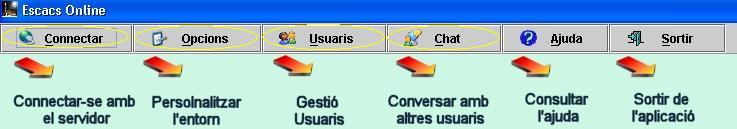

A
l'iniciar l'aplicació podem veure les següents opcions:

El
tauler d'escacs representa
el transcurs de la partida, i els taulers
inferiors i superiors les fitxes eliminades. La
taula de la dreta mostra elsmoviments realitzats pels
jugadors.
La barra d'status indica
la situació de la partida.